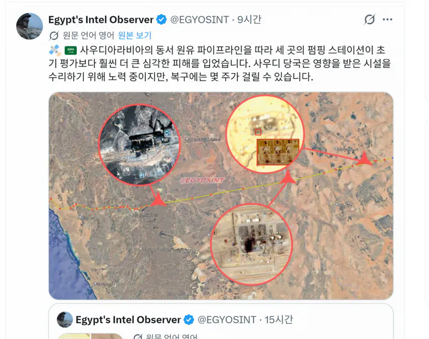
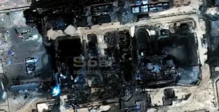
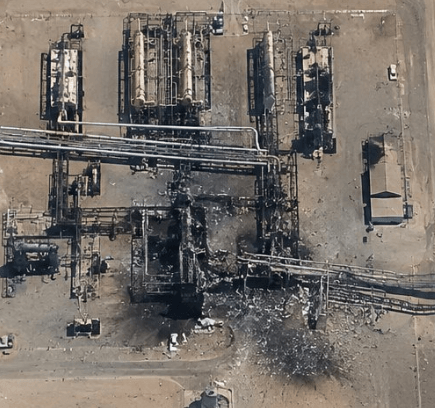
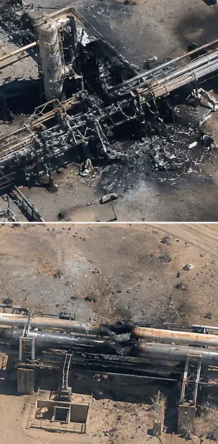
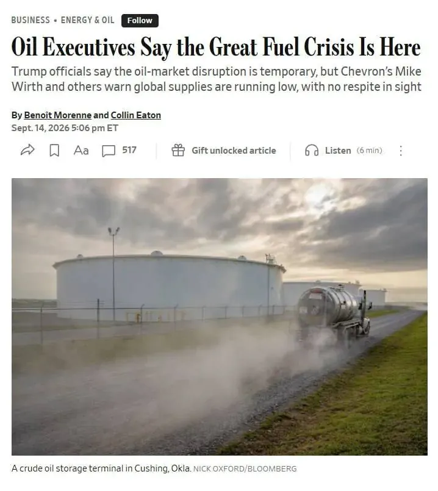
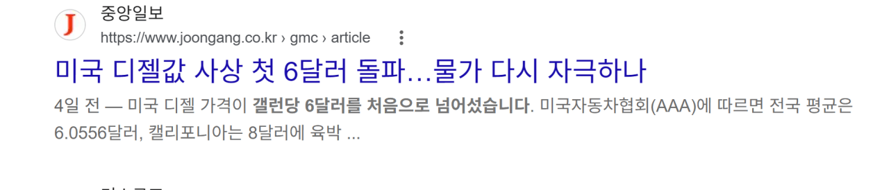
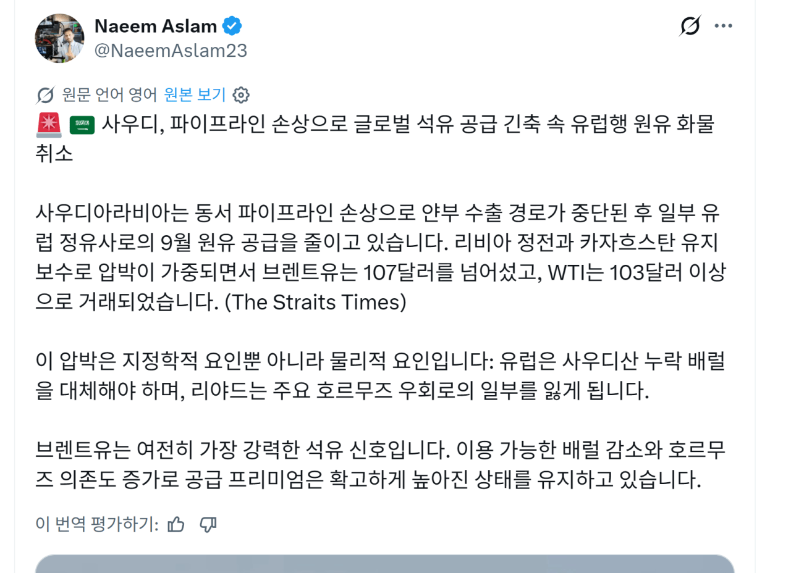

포텐엔 한번도 안올라갔지만 지난주 금요일에 사우디의 '유일한' 육상 석유 운송수단인 '동서 송유관'이 이라크 내 친이란민병대의 드론 공격에 의해
펌프장 세곳이 동시공격을 받아 파괴되었었음.




이런 시설이 파괴되면서 공식적으로 현재 송유관은 가동 중단. (펌프장엔 가압시설이란게 있는데, 여기에 불이 붙으면 전체 송유관에 불이 번짐)
지금, 안그래도 호르무즈 해협이 폐쇄된상태에서, 유일한 우회로인 홍해로 원유를 수출하려면, 이 파이프라인을 통해 (유일함)
홍해쪽 항구로 원유를 보내야되는데 이게 지금 막혔고, 4일째고, 수리에 최소 한달이상 소요될거라는 분석이 나옴.(한달도, 추가 공격이 없다하에 한달. )

지금 미국 정유업계 CEO들이, 이대로가면 겨울 쯤에 오일쇼크가 일어날수있다고 경고하고있음
지금은 사우디에서 저장고에 비축된 석유로 수출하고 있지만, 이마저도 재고는 1주일도안됨
호르무즈해협이 극적으로 열리지않는 한, 물리적인 원유 부족은 일어날수밖에 없게된 상황 ㄷㄷㄷㄷ

참고로 미국 현재 경유 가격은 한국식으로 리터당따지면 2500원임
중동 원유 수입비중이 6퍼센트밖에안되는 미국에서 리터당 2500원.
만약 한국이 자율시장경제였다면 한국은 3000원넘었음. 지금은 일단 최고가격제로 방어중ㄷㄷㄷ
언제까지 방어가될지는 모르겠지만 겨울까지 이 공급부족이 해결되지않는다면 좀 무서운 시나리오도 생각해봐야 할지도 ㄷㄷㄷ
추가) 글쓰는 사이에 나온 속본데

사우디가 유럽행 원유 공급을 일부 취소한다고 방금 발표함
불가항력, 뭐 국가로 따지면 모라토리움. 지급불이행
진짜 원유가 부족한 시대가 오고있음
이젠 그게 제일 합리적으로 보일 정도임ㅋㅋㅋ 애초에 싹 다 밀어버릴 생각으로 때렸어야 했는데 지도자 죽으면 국민이 알아서 혁명을 일으킨다는 망상으로 밀줄은 몰랐지 ㅋㅋㅋ